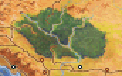
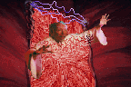

The Long Ride

| Betrayal at Krondor - Chapter 7 The Long Ride | |
|
|
|
|
Find the Waani, and destroy the Rift Machine. | ||||
|
[HOME]
| ||||
|  |
The main Quest of the Chapter is fairly straightforward. James, Locklear, and
Patrus must find an object called WAANI, and use it to destroy Delekhan's Rift
Machine. You will meet Duke Martin, Obkhar, Moraeulf, and Squire Phillip again
in this Chapter. |
|||
| WALKTHROUGH Chapter 7 |
 The Chapter starts in the North Sector. The southernmost part of
this Sector (where the Rift Machine is located) is seemingly inaccessible,
but part of the intervening mountain is illusory.
The Chapter starts in the North Sector. The southernmost part of
this Sector (where the Rift Machine is located) is seemingly inaccessible,
but part of the intervening mountain is illusory.Crossing the North Bridge, enter the North-East and South-East Sectors. Here you will find Duke Martin and Obkhar.
Crossing the South Bridge, enter the South Sector, where Moraeulf will be found. A short trip leads to the East Bridge, crossing which you will enter the (optional) East Sector.
In order to find the Waani, go to the South-West and North-West Sectors,
where you'll find Squire Phillip.
The basic recommended procedure is as follows:
- Cross North Bridge
- Talk to Duke Martin
- Talk to Obkhar
- Find Password Note ("Narab's Blood").
- Cross South Bridge
- Talk to Moraewulf
- Find the VICTORY Chest
- Find Squire Phillip's, and get the Waani
- Go back to North Sector
- Penetrate illusory mountain
- Find Rift Machine, and destroy it
Optional Quest (possibly already solved in Chapter 3 or Chapter 6):
- Visit Craig
- Cross East Bridge
- Kill the Pantathians
- Retrieve Craig's traps
- Return traps to Craig.
|
James, Locklear, and Patrus will NOT return in subsequent Chapters. At the end of this Chapter, their unspent Money will be useless. There is only one Shop in Dimwood, the FIFE AND LAUREL, which won't be open unless you've already performed a Quest in Chapters 3 or 6, or if you perform it midway through the current Chapter 7. The Chapter can easily be finished without opening this Shop. Unless you've set up a SCHEME involving the FIFE AND LAUREL in Chapter 7, James and Company will hardly need any Money in this Chapter. So don't clutter up your Inventories with useless Items you're never going to sell anyway! Leave the GEMS alone, and only pick up Weapons and Armor if you think you can use them. The important Items to look out for here are the basic ones: Rations, Restoratives, and Herbal Packs. You'll find plenty of these if you search carefully. Also valuable are any Weapon or Armor Modifiers. Some of the Combats here are quite heavy, and many Enemies carry Poisoned Swords and Quarrels. Silverthorn Anti-Venom is extremely valuable!
|
MAP OF NORTH SECTOR You can exit the North Sector (via the North Bridge) without meeting a single Enemy, but please explore first. The Northern Exit is guarded by six Quegian Pirates and a Moredhel Spellcaster [Combat 30]. This is an ENDLESS COMBAT, so stay away. You will run into two Moredhel Warriors and a Spellcaster, if you follow the Road to the South [Combat 33]. Near the end of the Road you will find the FIFE & LAUREL Shop. It will be closed, unless you've already performed Craig's Quest, or killed the Pantathians in the East Sector (in Chapter 3 or Chapter 6).

If you haven't done these deeds, you can still do them in this Chapter. Locate a Tree Stump on the river bank South-West of the Shop. It contains Rations [33], unique to this Chapter. You may already have emptied most of the Caches here in earlier Chapters, but if you haven't been here before, at least make sure you fight the Rusalka near the Western waterfall [Combat 15], in order to get RIVER SONG from a Mound of Dirt nearby. There are also eight Mordehel Chests in this Sector.
The RIFT MACHINE is located in this Sector. You won't need to access it until you've found the WAANI, but here's how:
The southernmost part of this Sector is closed off by a mountain. Part of the mountain is illusory, and can be penetrated. As you approach the mountain, you will run into three Moredhel Warriors and two Spellcasters [Combat 36]. When you've killed them, don't forget to search their bodies - one Moredhel holds a Bessy Mauler! Pass through the Mountain, right into a Trap!
James can acually solve this Trap alone
without any help from Locklear and Patrus.Can you see how this can be done?
After you've dealt with the Trap, you'll find two Moredhel Spellcasters [Combat 37] guarding the Rift Machine. In order to destroy the Rift Machine, you need the WAANI, so start searching!
MAP OF NORTH-EAST SECTOR
North of the Trap you will find the MATTRESS, SQUARE, and SNOWFLAKE Chests. Even if you've been here in an earlier Chapter, the SNOWFLAKE Chest will now have new contents: a Spynote with a Password, and a nice cache of Restoratives, Herbal Packs, Silverthorn and Silverthorn Anti-Venom. Patrus can get MIRRORWALL from the MATTRESS Chest, if Owyn hasn't beaten him to it!
Similarly, in the East part of this Sector, you will find the BROOM, PATH, and SURF Chests. The SURF Chest has completely new contents in this Chapter. Patrus can find THE UNSEEN in the PATH Chest, if Owyn hasn't been here first. South of these Chests you will meet Duke Martin, who will give you information relevant to the Chapter. After you've talked to Martin, go a few steps to the South, and then East towards a Waterfall.

MAP OF SOUTH-EAST SECTOR
In the area West of the river near the Waterfall, you will find six Moredhel Chests. Four of them are guarded by two Quegian Pirates and two Moredhel Spellcasters [Combat 39]. Patrus can get GAMBIT OF THE EIGHT
from the TROLLS Chest (if Owyn hasn't been here). Near the Combat site you can just about squeeze south beetween the river and the western hill. Here you will meet Obkhar, who will add substantially to Duke Martin's information. You should now head towards the South Bridge, but first you may want to explore this area in more detail.
As you approach the South Bridge (the only exit) you will meet a party of SIX Goblins guarding the Bridge. If you have the Password Note (from the SNOWFLAKE Chest), they will let you pass. If you're feeling up to it, you can also fight them [Combat 43], but beware: Most of them are carrying Poisoned Swords or Quarrels! You'll be glad to have some Silverthorn Anti-Venom afterwards. Cross the South Bridge.

MAP OF SOUTH SECTOR
In this Sector you can pick up 60 Rations from Tree Stumps.
Find the Road to the South. If you haven't met Craig yet, you will soon find his House. Poor Craig! Not only has he been deprived of his treasured Ironjaw Trap, but also run into some foul sorcery in the East Sector, which has turned him into an old man. If you bring back his Trap, Craig will reward you with a Ring of the Golden Way.
Even if you can't be bothered to solve Craig's Quest, now head towards the East Bridge. Here you will find Moraeulf, near the South bank of the river. Unless you stay close to the river, you will run into four Moredhel Warriors here [Combat 46]. Moraeulf will tell you where the WAANI is hidden. You can't be blamed if you now want to follow his directions, but if you're not in a hurry, go on towards the East Bridge. You'll hardly be able to avoid two Moredhel Warriors and a Spellcaster near the Bridge [Combat 47]. Then cross the Bridge and enter the East Sector.
MAP OF EAST SECTOR
Three Pantathians have set up a Magical Barrier in the area East of the Bridge. In order to travel freely, and access the various Chests here, you'd better kill them first [Combat 28]. Please consult the MAP WEB Page (above) for details on the Magical Barrier and the best way to deal with it. Craig's Trap(s)
NOTE: If you kill the Pantathians and/or solve Craig's Quest, the Fife and Laurel Shop (in the North Sector) will be OPEN.
Now go back to Craig's House, and receive your reward. Unless you now want to avail yourself of the just-opened Shop in the North Sector, go straight towards the South-West Sector, where you'll find Moraeulf's VICTORY Chest.
MAP OF SOUTH-WEST SECTOR
The South-West Sector is not an interesting one, apart from the VICTORY Chest, which can only be found in this Chapter. As far as Moraeulf knows, the WAANI is hidden in this Chest, but when you find the Chest, you'll find that Squire Phillip has already been here, taken the WAANI, and left a NOTE among loads of Poisoned Rations. The three Combats in this Sector can be avoided by clever navigation, but while exploring, be prepared to meet three Goblins [Combat 45], five Goblins [Combat 42], and four Goblins [Combat 41]. Combats or no Combats, now enter the North-West Sector.
MAP OF NORTH-WEST SECTOR
The first thing you run into here will probably be this trap:
Phillip's House is to the North-West of this Trap. It is surrounded with heavy Goblin Combats. Let's stay away from it for the time being, and explore the rest of this Sector.
and a Spellcaster [Combat 35]. Now go West until you hit the road. Three Scorpions [Combat 32] are waiting here. Follow the Road all the way to the West exit, which is guarded by four Goblins, two Quegian Pirates, and a Moredhel Spellcaster [Combat 49]. This is an endless Combat. Don't overlook the House North of the Road (perhaps already known to you as Ockie's House). In this Chapter you can pick up a magical WOODEN CHEST here [24 uses], which will allow you to propel into the air! A Tree Stump near this house contains 33 Rations, unique to this Chapter.
Finally, locate Squire Phillip's House (perhaps known to you as Witch Wilindi's House, if you've been here before in an earlier Chapter). This is guarded by a small army of Goblins, which will be encountered in two groups of SIX [Combat 34], and SEVEN [Combat 51]. The Combat perimeters are wide, and overlap, so the order of these two Combats depends on the direction from which you approach. When the first of these two Combats is over, the second one will follow as soon as you move. So don't move until you've fixed and enhanced your Weapons and Armor, raised your Characters' Health and Stamina to the maxima, and made sure they're not suffering from a Poisoned Condition. TIP: Before approaching Phillip's House, make sure you have plenty of Restoratives and at least three charges of Silverthorn Anti-Venom.
Now that you have the Waani, all you need to do is to retrace your path back to the North Sector, penetrate the Illusory Mountain, and locate the Rift Machine ...
